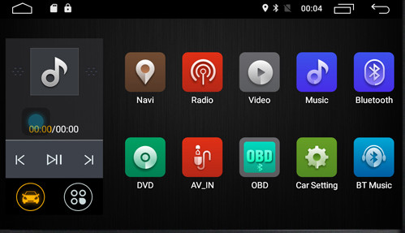
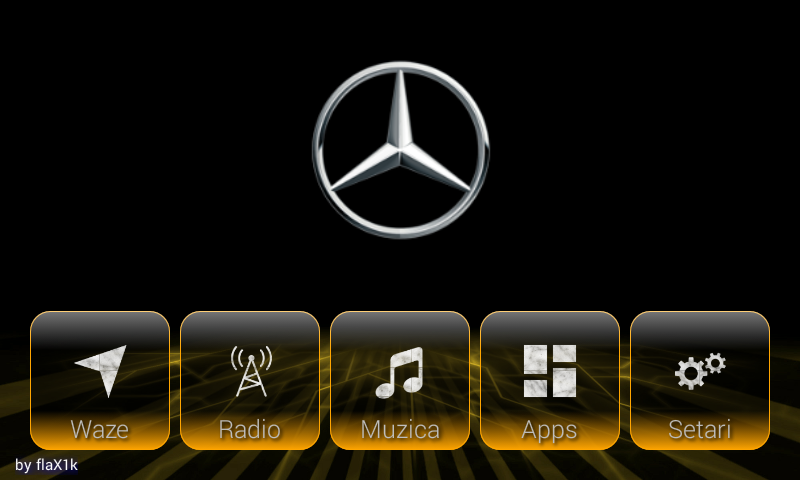
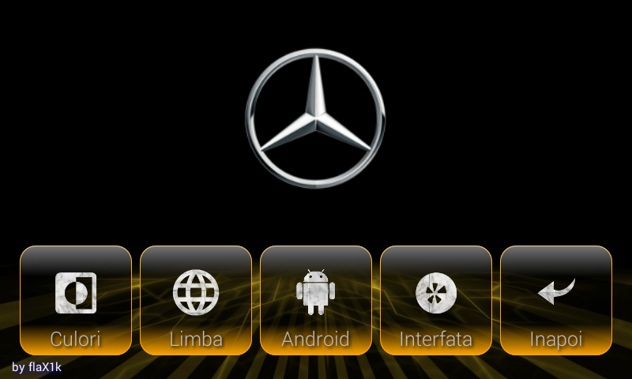
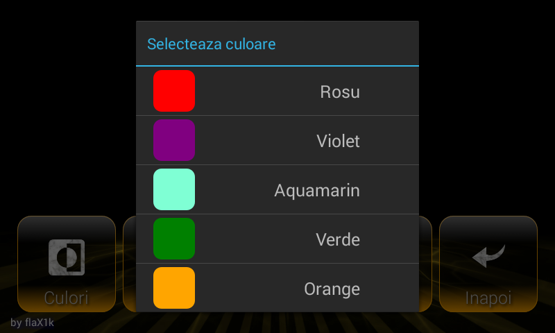
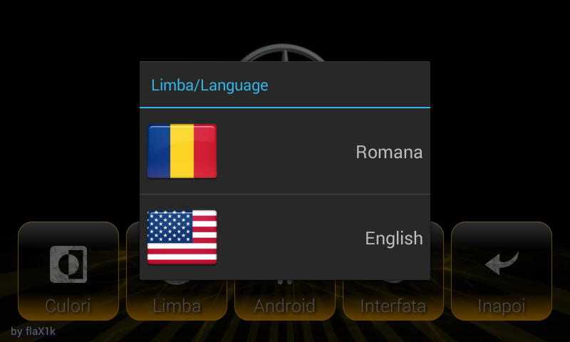

MYSTAR - android launcher
MyStar v0.2
The version 2 of MyStar is already in compilation and I hope it'll be finished in a few days.
The original launcher app of my car's navigation looked like this:

But that was boring and I wanted to be more personal, created by me. That's why I coded the MyStar v0.1, a personalized android launcher for my car.
MyStar v0.1
My android car navigation is already old because is running API-19, version 4.4 aka KitKat and my launcher should be small and simple. Currently it looks like this:
The main screen

The settings screen

The color choice screen

The language choice screen

More features to add:
- Small media player on the main screen
- Bluetooth connectivity
- Language support (currently not working)
MyStar v0.2
Some features added and the main layout changed.
The new main layout is displayed below. A media player (audio and video) added, bluetooth connectivity and language support.
The old button for audio player has been removed but a new button has been added with no feature implemented yet.
to do: - add some car' stuff. Don't know what yet...